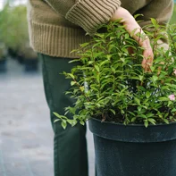

Synagrix is a social agribusiness dedicated to empowering farmers through organic farming, agro-tourism, and advanced food preservation technologies like freeze-drying. By building farmer cooperatives, providing training, and opening global markets, we enable smallholders to thrive sustainably on their own land.
Our farmers and collaborators share how Synagrix has transformed their livelihoods and created new opportunities through organic farming, preservation technology, and fair trade practices.
Default Review Text